Getting Started with HP Helion Public Cloud Console
Welcome to HP Helion Public Cloud Horizon Console! We want you up and running quickly, so this Getting Started guide walks you through network setup and connection (if not going with the default configuration setup when you activate compute services), instance and volume creation, security options, identity parameters, and management tools that facilitate your organization's use of HP Helion Public Cloud. This page takes you through the interface in the chronological order needed to get up and running, rather than the order displayed in the console.
After initial setup, revisit the interface to monitor usage, modify, add, and delete networks, instances, volumes, roles, groups, and more. For the latest updates to the current HP Helion Public Cloud Console release, see What's new with HP Helion Public Cloud Console.
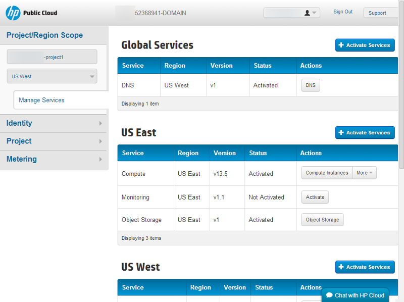
This page contains the following sections:
Creating and connecting a network
This section includes how to:
Note: A default configuration comes with HP Helion Public Cloud compute activation and includes:
- A network
- A subnet
- A router connecting the subnets to the Internet
- A security group with basic server options, both SSH and Ping rules
You can use the default network to deploy HP Helion Public Cloud compute instances (virtual servers), or create a network configuration through the HP Helion Public Cloud Console with the following instructions.
Create a network
Login to HP Helion Public Cloud with your username and password.
On the HP Helion Public Cloud console interface, click "Project," on the left-side bar then "Networks" under "Manage Networks."
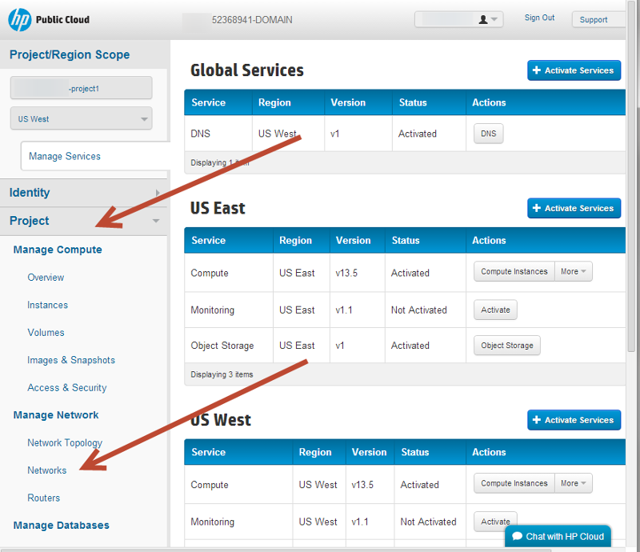
Click "+Create Network" in the right-hand navigation.
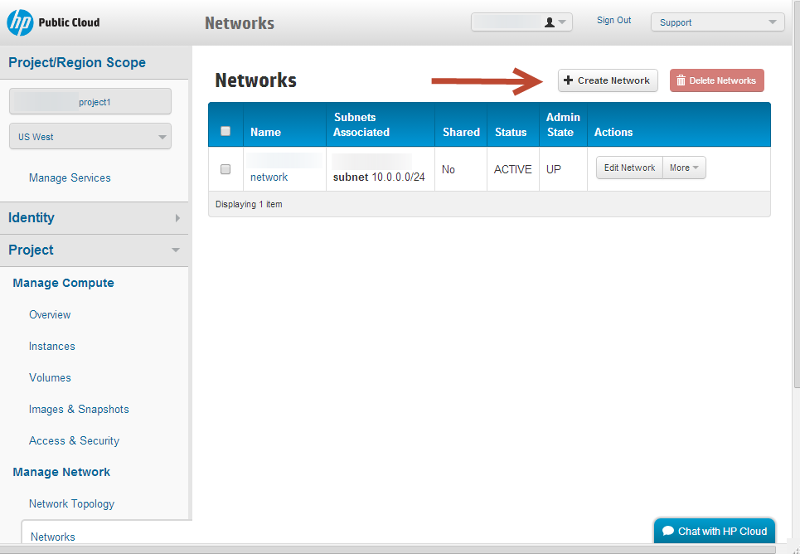
Enter a "Network Name" in the "Create Network" pop-up screen, leave the "Admin" State box checked, and continue to the directions in "Create a subnet" below.
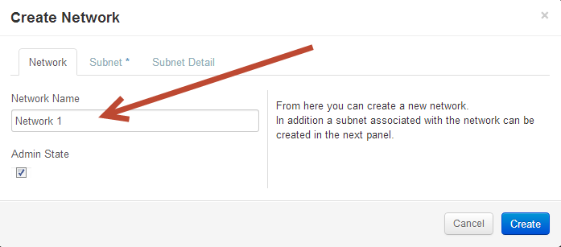
Create a subnet
- Click the "Subnet" tab in the "Create Network" pop-up screen. Note: If you click the "Create" button on the "Network" pop-up before setting up a "Subnet," you are prompted to specify a network address or turn off the option to create a subnet through an error message.
- Enter the subnet name.
- Click in the "Network Address" box. The pop-up message states the network address is in Classless Inter-Domain Routing (CIDR) format; i.e., 000.000.0.0/00. Enter the network address displayed: 192.168.0.0/24.
- Keep the IPv4 default in the "IP Version" box unless you know you have moved to IPv6.
- Leave the "Gateway IP" box blank to use the default value of the network address; e.g., 192.168.0.1 for 192.168.0.0/24.
Leave the "Disable Gateway" box unchecked to use the default and click "Create."
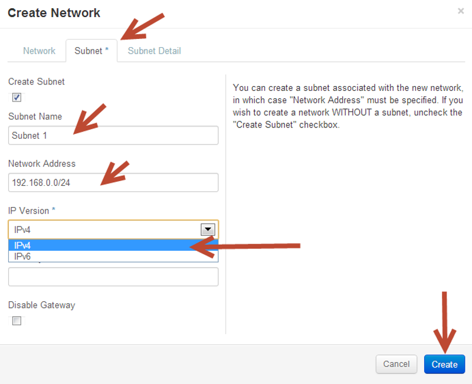
The "Networks" screen displays your network name and associated subnets.
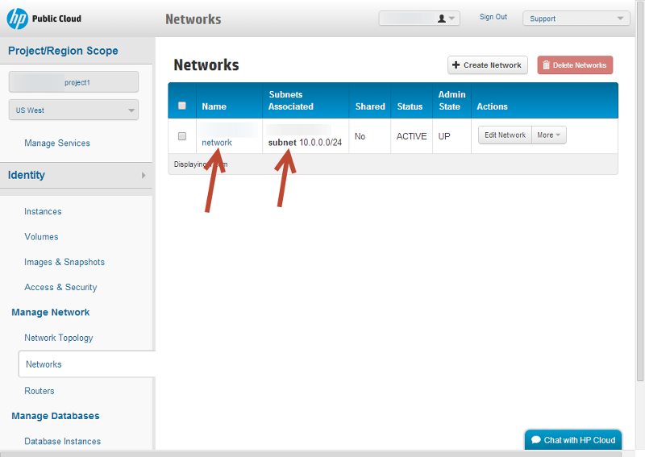
To see a graphic display of your network setup, click "Network Topology" under "Manage Network" in the left-hand navigation.
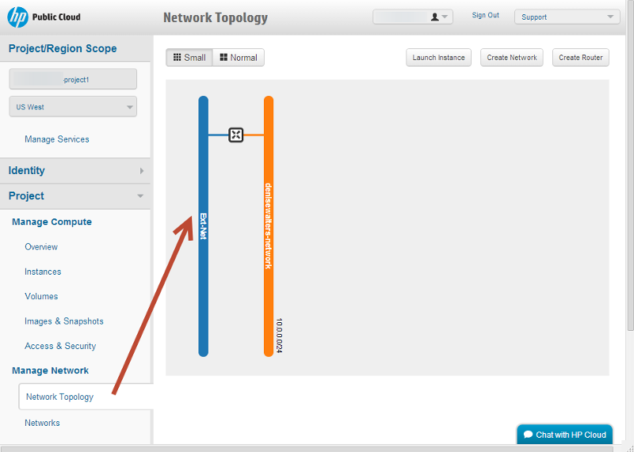
Create a router
If on the "Network Topology" screen, click "Create Router" in the top right-hand navigation. If not, click "Routers" under the "Manage Network" heading in the left-hand navigation.
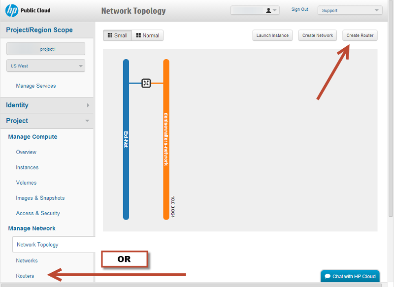
If you clicked "+Create Router" on the "Network Topology" screen, enter your router name and click "Create Router." If you clicked "Routers" under "Manage Network", click "+Create Router" in the upper right-hand navigation and enter the router name in the pop-up.
Click "Router" in the left-hand navigation to see the router name and status. Note: Click the router "Name" to display its ID number and status. If you do this, click "Routers" in the left-hand navigation to make the "Set Gateway" action available for the following step or click the "Back" button in your browser.
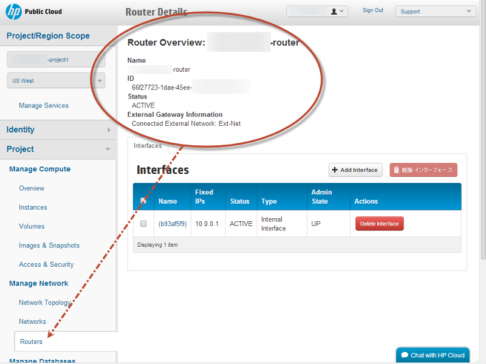
On the "Routers" page, click "Set Gateway" under "Actions" to connect your router to the Internet.
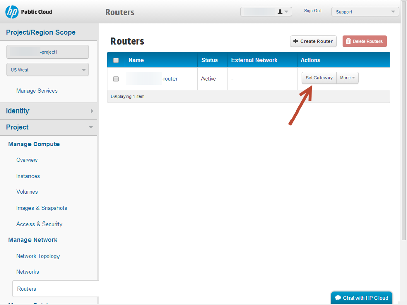
Click the drop-down menu in the "External Network" box in the "Set Gateway" pop-up, select "Ext-Net," and click "Set Gateway."
Note: The external network is the router's default route, with the router acting as a gateway for external connectivity. While you can configure a subnet that is internal-only, you must connect it to another subnet with external connectivity.
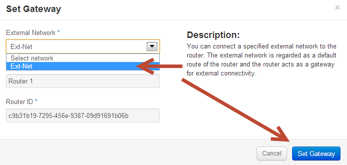
Connect your network
Click the router name on the "Routers" page.
Click "+Add Interface" on the far-right of the "Router Details" page.
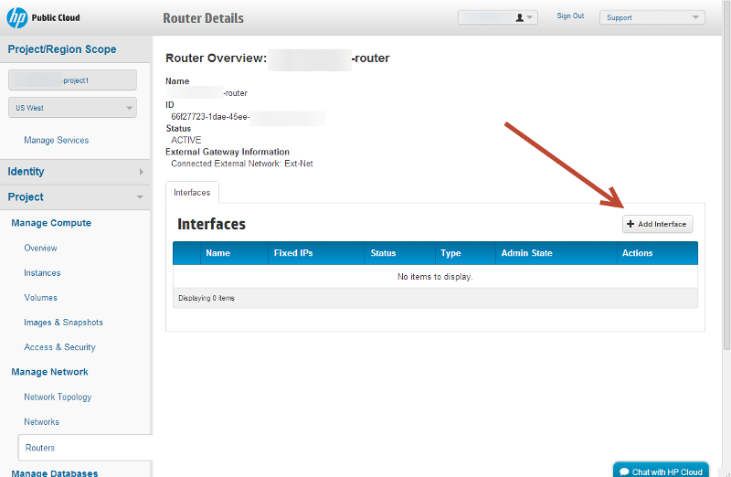
Click the drop-down menu in the "Select Subnet" box in the "Add Interface" pop-up and click on the network you configured. Note: You can optionally specify an IP address in the box provided, but the default interface IP address is the selected subnet's external gateway and the best choice unless you are setting up a more complicated connection. Any IP address you specify must belong to the subnet in the drop-down menu.
Click "Add Interface."
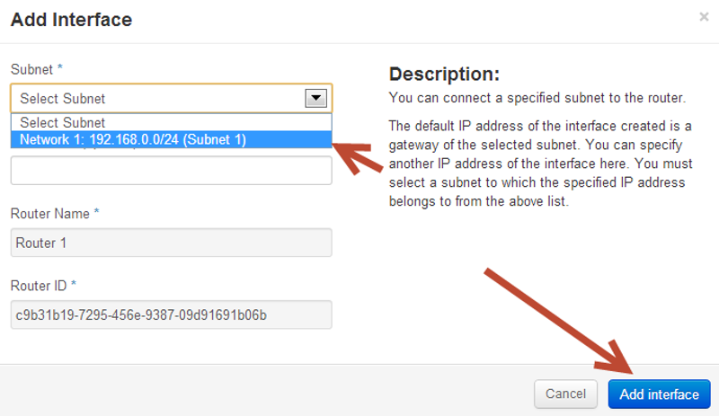
Important: To delete a network, you must delete any instances running on that network (instance creation covered below) and the router interface before deleting the network. If you don't have instances on the network, you still have to delete the router interface before deleting the network:
If you have created an instance, click "Instances" on the left-hand bar under "Manage Compute."
Select the check box for any instance running on the network you want to delete and click "Terminate Instances" in the upper right-hand navigation.
Click "Routers" under "Manage Network in the left-hand bar.
Click on the router "Name."
On the "Router Details" page, select the check box next to the "Interface" name, and click "Delete Interface."
Click "Networks" in the left-hand bar, select the check box next to the network you want to delete, and click "Delete Networks" in the upper right-hand navigation.
Managing HP Helion Public Cloud
You are now ready to use the options under "Manage Compute" under "Project" in the left-hand navigation. This section includes:
- Overview
- Create an instance
- Create and attach a volume
- Images and Snapshots
- Monitoring
- Access and Security
Overview
Select "Overview" under "Manage Compute," to display your usage summary and quotas for:
- Instances
- VPCUs
- RAM
- Floating IPs
- Security Groups
As you use HP Helion Public Cloud, click on the "Overview" options any time to query current usage as well as usage during specific time frames.
Create an instance
An instance is a virtual server.
Note: HP Helion Public Cloud provides a list of images from which you can boot an instance. While you can also boot from an HP Helion Public Cloud instance you have launched using "Images and Snapshots," it is unnecessary to get up and running and beyond the scope of this document.
Click "Instances" under "Manage Compute" in the left-hand navigation.
Click "+Launch Instance" in the upper right-hand navigation of the screen.
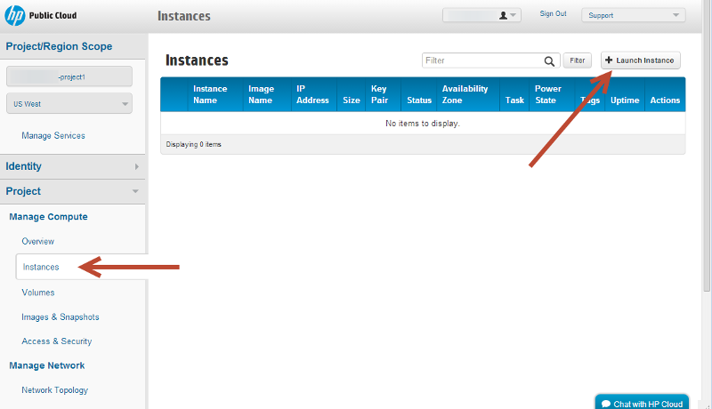
You can leave the default choice of the "Any Availability Zone" (AZ) box, which arbitrarily assigns an AZ for an instance or click the drop box to specify where to locate an instance. Note: The default choice locating an instance in any AZ offers high availability, ensuring a high level of operational performance. You can also specify an AZ for an instance if you want to segregate AZs per function for your own organizational purposes; e.g., you could select AZ1 for your data center, and set the remaining two up later for other discrete functions. Such a setup is completely optional as the AZs share all information and work in tandem.
Enter a name in the "Instance Name" box.
Click the drop-down menu under "Flavor" to select the hardware configuration you want to emulate, i.e., how much disk space and RAM you need. When you select a flavor, the "Flavor Details" box displays the following:
- Name
- # of VCPUs
- Root disk size
- Ephemeral disk size
- Total disk size
- RAM usage
Note The "Project Limits" box under "Flavor Details" graphically displays quotas allowed and usage of Instances, VCPUs, and Total RAM after you select a flavor.
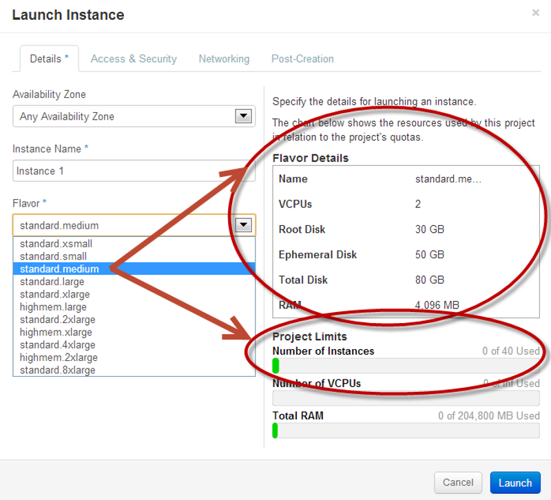
Enter the number of instances you want to create under "Instance Count."
Select the "Instance Boot Source" source from the drop-down menu. To select an HP Helion Public Cloud default image, select "Boot from Image" from the drop-down.
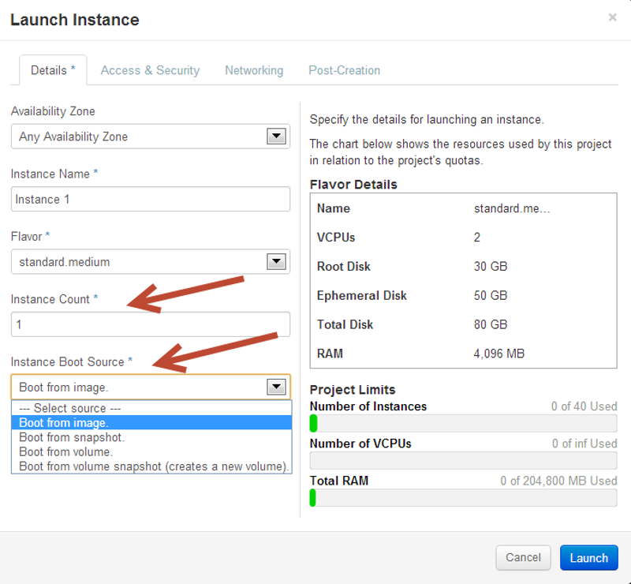
Click the "Select Image" drop down under "Image Name." Select one of the images HP Helion Public Cloud provides.
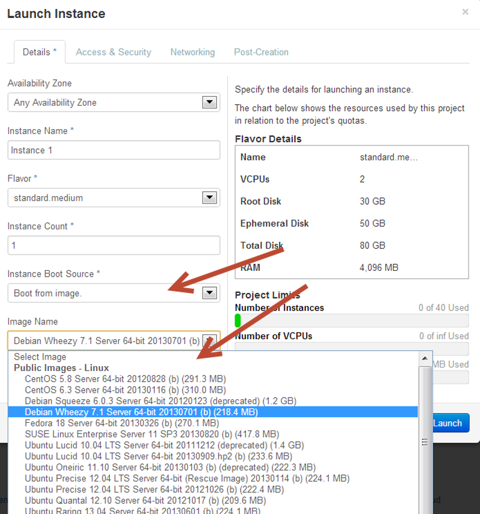
Click the "Networking" tab in the upper navigation of "Launch Instance" and click the "+" next to the network you want to launch an instance from. You can also drag and drop the network from which you want to launch the instance from the "Available Networks" box to the "Selected Networks" box.
Note If you click "Launch" before clicking the "Networking" tab, an error message displays; however, you can still select the network desired from the "Available Network" box to the "Selected Networks" box.
Click "Launch."
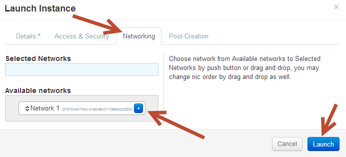
Create and Attach a Volume
A volume is a block storage device you attach to an instance.
Note: HP Helion Public Cloud provides a list of images from which you can boot an instance or volume. While you can also boot from an HP Helion Public Cloud instance you have launched using "Images and Snapshots," it is unnecessary to get up and running in HP Helion Public Cloud and beyond the scope of this document.
In the left-hand navigation, click "Volumes" under "Manage Compute."
Click "+Create Volume" in the upper right-hand navigation.
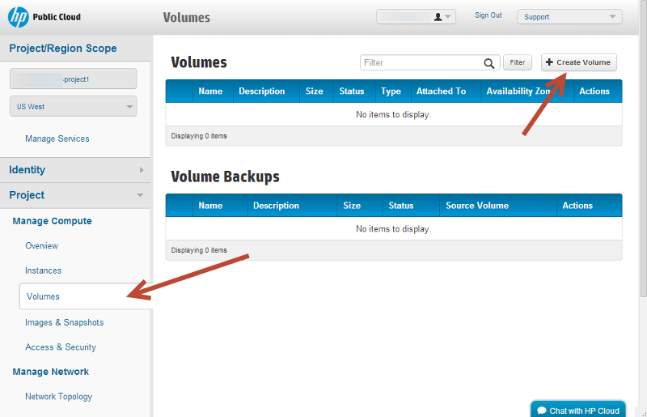
Enter a name under "Volume Name" and, optionally, a description in the box below and a "Type" from the following drop-down menu.
Staying within the "Volume Limits" shown in the "Create Volume" box, enter a number of GBs under "Size."
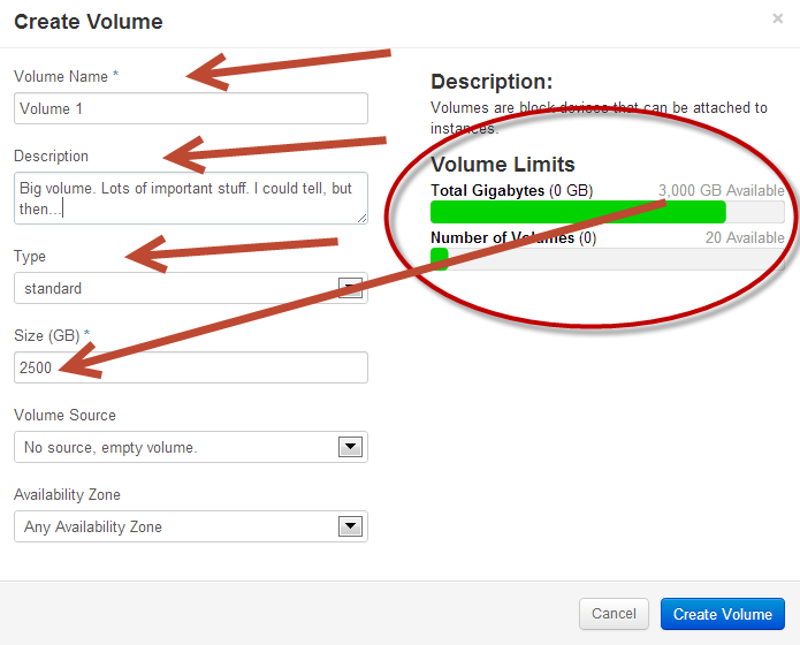
Select a volume source from the drop-down menu.
If you select "Image" as your volume source, click the drop-down menu for "Choose an image" under the "Use image as a source" box that appears. Click on the image you want to use.
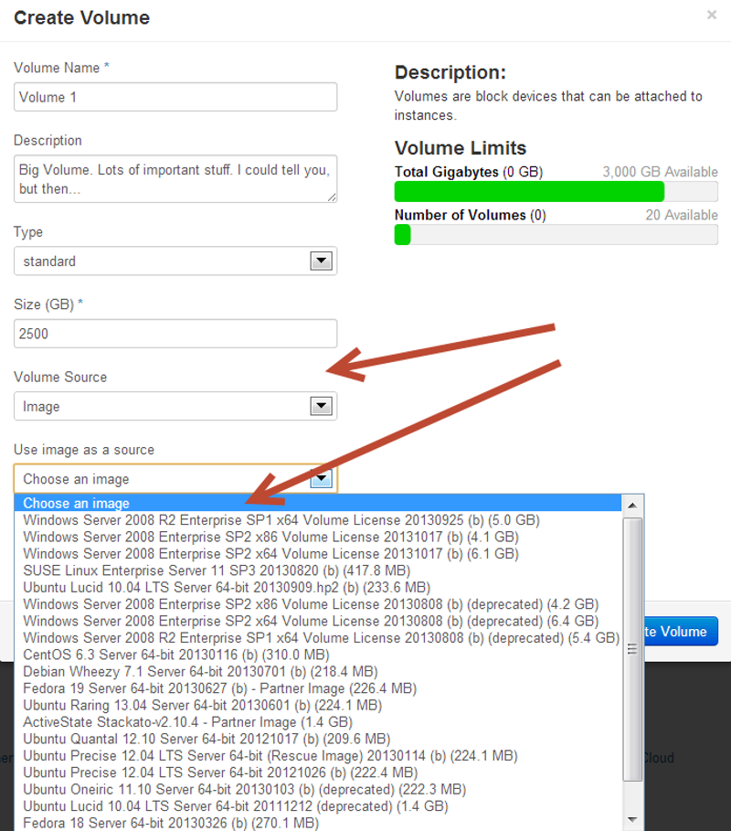
Select an AZ. HP Helion Public Cloud recommends the pre-filled "Any Availability Zone."
Click "Create Volume."
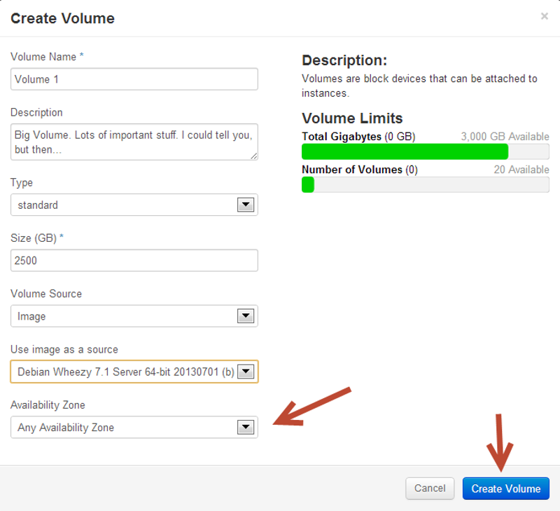
To attach the volume to an instance, click "Edit Volume" under "Action" on the "Volumes" page.
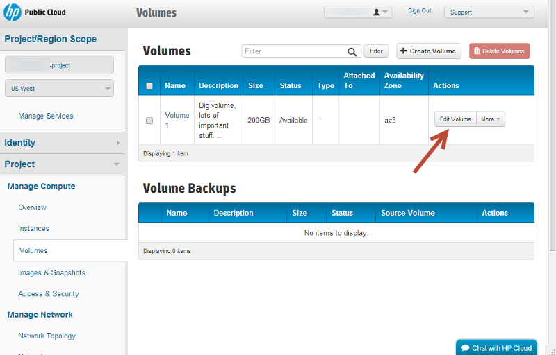
Select an instance to attach the volume to from the drop-down menu on the "Manage Volume Attachments" page.
Under "Device Name," you can specify a location in the system if desired or enter the displayed default. Note: If choosing the default, you must still enter it manually even though it is displayed (greyed out). Otherwise, you receive an error message that you must specify a location.
Click "Attach Volume."
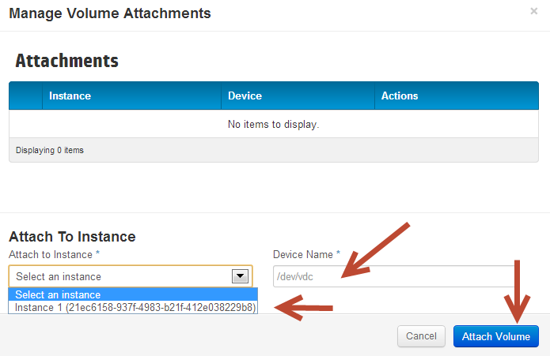
Images and Snapshots
Functionality Overview
Important: HP Helion Public Cloud provides a list of images from which you can boot an instance. While you can also boot from an HP Helion Public Cloud instance you have launched and customized using "Images and Snapshots," it is unnecessary to get up and running in the Cloud and beyond the scope of this document.
While this document does not cover creating snapshots, click "Images and Snapshots" in the left-hand bar to view available server and volume images and their details. For more details, click the image name on the "Images" page. Images listed under "Public" are available to anyone. "Project" images are for your specific project only.
Access and Security
Security groups and security group rules allow you to specify the type of traffic and direction (inbound/outbound) that are allowed to pass through a project's network port(s). When you create a project in HP Helion Public Cloud, you must also create security group rules to define access types through its ports, designating security group members depending on their job functions and access needs.
When a port is created in HP Helion Public Cloud Networking it is associated, unless you specify otherwise, with a default security group that allows inbound traffic from the same subnet and all outbound traffic. You can add security group rules to the default security group to modify access or create a new security group to contain the rules you need.
Security group rules have three parts:
Rule - A rule template or rules you create. For example, if setting up a VM as a mail server, you might select Custom TCP Rule, Custom UDP Rule, or Custom ICMP Rule.
Open Port/Port Range: Open a single port or a range of ports.
Remote: For this rule, you must specify the source of allowed traffic in either the form of an IP address block (CIDR) or through a security group.
Default security group
Click "Access & Security" in the left-hand bar under "Manage Compute" and "Project" to begin.
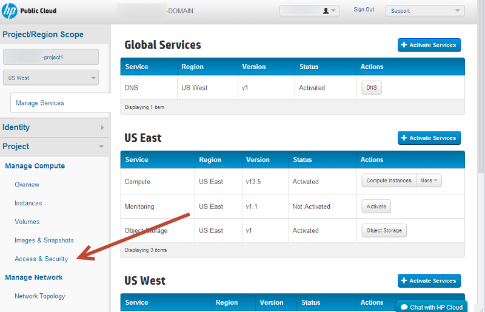
A default security group is already set up. To display the default rules, click the "Edit Rules" button next to "default" on the "Security Groups" page. As shown below, the default security group rules have "Ether Types" IPv4 and IPv6 set up for "Ingress" (Incoming) and "Egress" (Outbound) directions. Note: It may be easiest to add any new security group rules to the default group so you do not have to recreate ingress and egress directions.
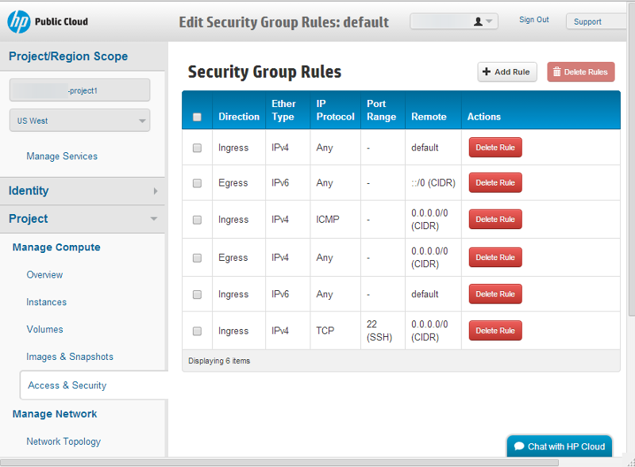
Click the "+Add Rule" button in the top-right navigation if you want to create a new rule in the default security group.
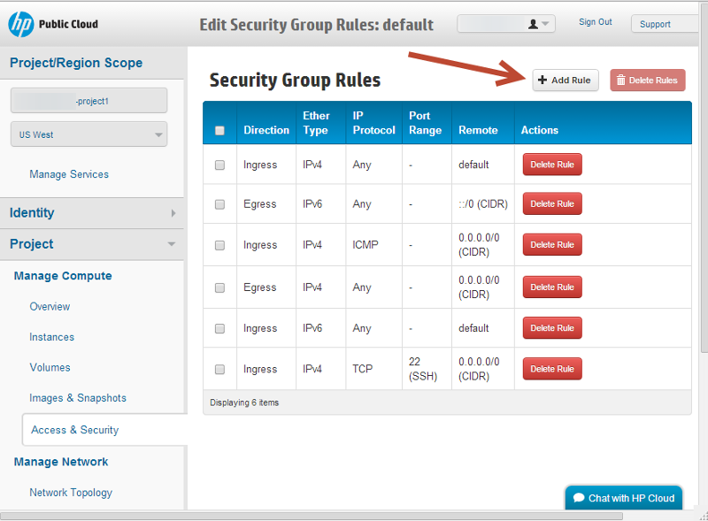
In the "Add Rule" box, make selections for the rule as outlined below. Additional selections may pop up depending on your setup choices.
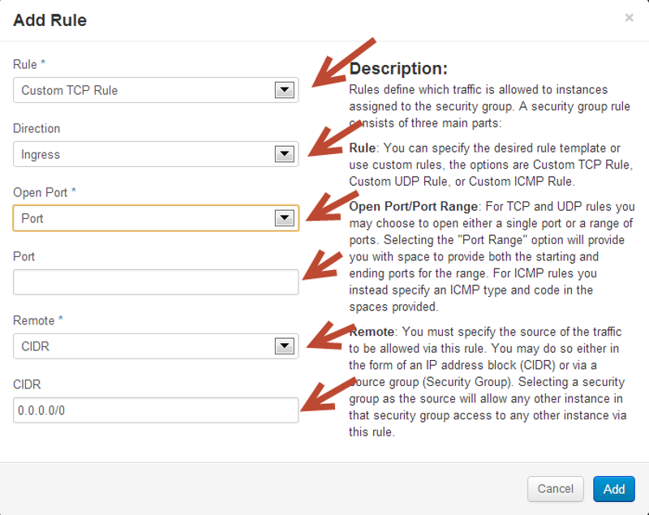
Click the "Rule" drop-down box and make a selection based on the function of your VM.
Select "Port" to open a single port, or "Port Range" to specify a range from the drop-down under "Open Port." Enter the port number or start and end port numbers based on your selection.
Select "CIDR" or "Security Group" from the drop-down under "Remote" to specify the source of the allowed traffic for the rule. If CIDR, enter an IP address block under "CIDR." If "Security Group," select the name from the drop-down box, then designate IPv4 or IPv6 under "Ether Type." If you do not already know you are using IPv6, select IPv4.
Click "Add."
To delete a rule from the default group, click "Access & Security" in the left-hand bar, then click "Edit Rules" to the right of the default security group, which is what you did to add a rule.
Click "Delete Rule" next to the rule you want to get rid of.
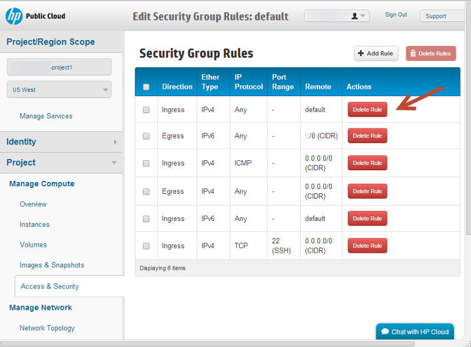
New security group
Click "Access & Security" in the left-hand bar under "Manage Compute" and "Project" to begin.
Click "+Create Security Group" in the upper right-hand navigation.
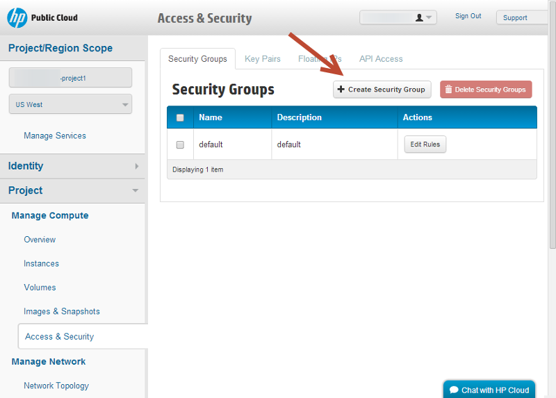
Enter a name in ASCII-only characters and numbers, a description, then click "Create Security Group."
Click "Edit Rules" next to the new security group under "Actions" in the right-hand navigation to add security group rules.
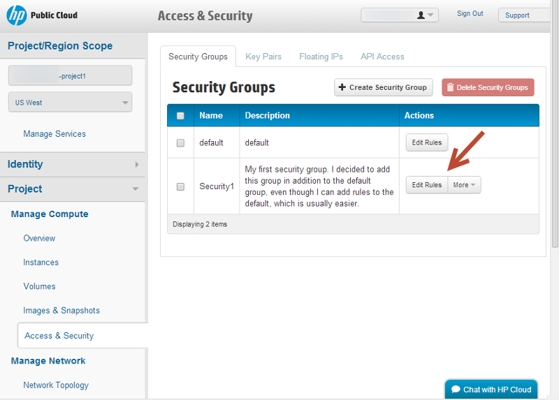
Click the "+Add Rule" button in the top-right navigation.
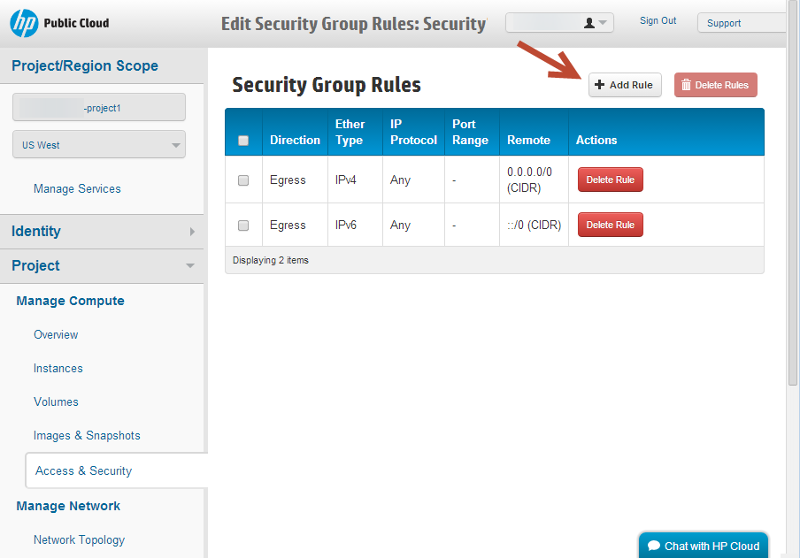
Click the "Rule" drop-down in the "Add Rule" box and make a selection based on the function of your VM.
Click the "Direction" drop-down box and select "Egress" to designate outbound traffic or "Ingress" to designate inbound traffic.
Select "Port" to open a single port, or "Port Range" to specify a range from the drop-down under "Open Port." Enter the port number or start and end port numbers based on your selection.
Select "CIDR" or "Security Group" from the drop-down under "Remote" to specify the source of the allowed traffic for the rule. If CIDR, enter an IP address block under "CIDR." If "Security Group," select the name from the drop-down box, then designate IPv4 or IPv6 under "Ether Type." If you do not already know you are using IPv6, select IPv4.
Click "Add" and your new rule displays in the security group.
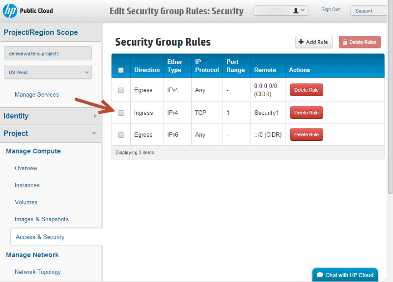
Click "Delete Rule" next to a rule you want to get rid of.
Click "Access & Security" in the left-hand bar to display your security groups.
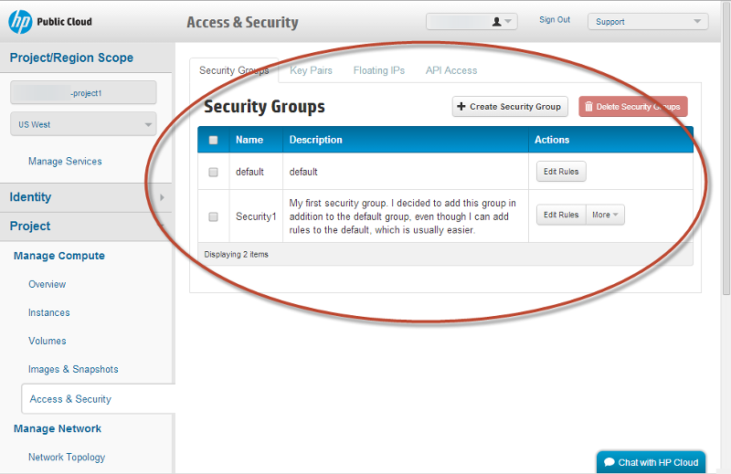
Monitoring
Use HP Helion Public Cloud Monitoring to ascertain system health and track resource metrics. Create the following in the HP Helion Public Cloud Console to define the metrics you want to gather, where you want them sent, and configure an alarm that sends them:
- An endpoint that specifies the metrics to gather
- Subscriptions that specify which metrics to stream to an endpoint
- Notification addresses to receive email and/or SMS alarm messages
- Alarms to define conditions that trigger end-user notification
After completing these tasks, you receive the metrics in JSON format at the locations you specified when an alarm is triggered. The metrics are streamed over an AMQP socket. Select the tool of your choice to create graphical representations of the metrics.
Begin:
- Click "Manage Services" in the left-hand bar on the HP Helion Public Cloud Console landing page, then "Activate" in the "Monitoring" row under the region you are setting up.
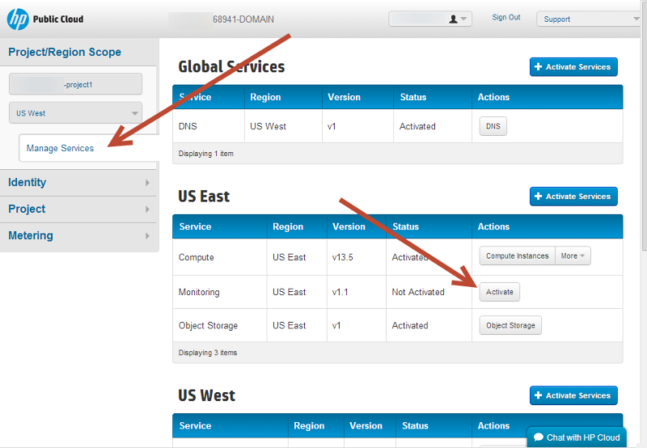
Once activated, click "Monitoring" under the "Actions" heading on the landing page to begin.
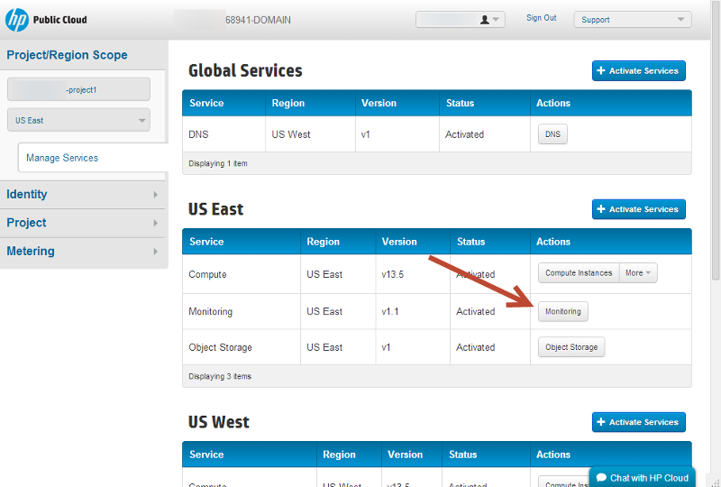
Create endpoints
Click "+Create Endpoint." You can create only one, total. Note: Record the password for the generated endpoint in the pop-up display. It cannot be retrieved later. If you lose the password, click the "Reset Password" button under "Actions" on the "Endpoints" page.
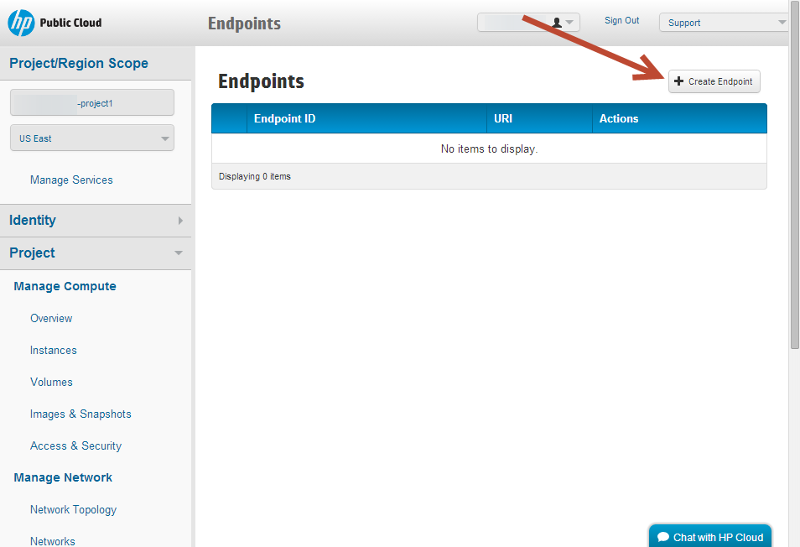
Click the endpoint ID in the "Endpoints" screen to display the endpoint ID, the URI, the queue, and the user name.
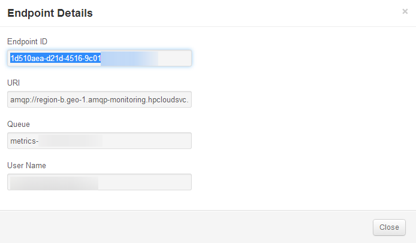
Create subscriptions to endpoints
Click "Subscriptions" under "Manage Monitoring" in the left-hand bar.
Click "+Create Subscription" in the upper-right corner of the "Subscriptions" page.
Select an endpoint ID to subscribe to from the drop-down menu in the "Create Subscription" box.
Select the namespace of the metrics to receive from the drop-down menu.
Select an instance from the drop-down menu.
Click "Create Subscription" in the lower-right of the "Create Subscription" box.
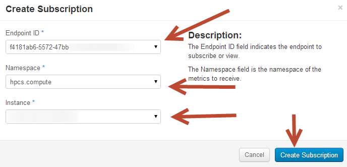
Create notification addresses for subscriptions
Click "Notifications" under "Monitoring" in the left-hand bar.
Click "+Create Notification Address" in the upper-right of the "Notifications" page.
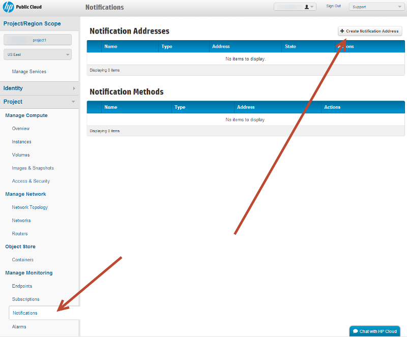
Enter a notification address name in the "Create Notification Address" box.
Select "Email" or "SMS" from the "Type" drop-down menu.
Enter an address in the "Address" box. For SMS, use the E.164 for international telephone numbers, which requires a "+" followed by the country code, then the regional number. Note: Currently, only US phone numbers are supported.
Click "Create Notification Address."
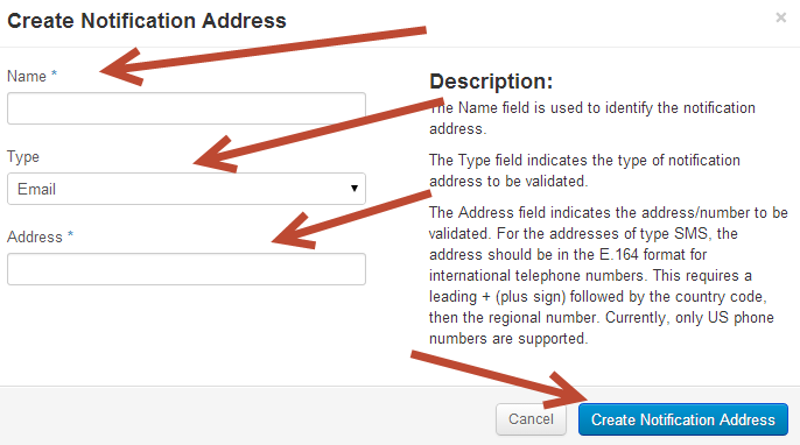
Click "Verify Address" under "Actions" in the row for the address you just created.
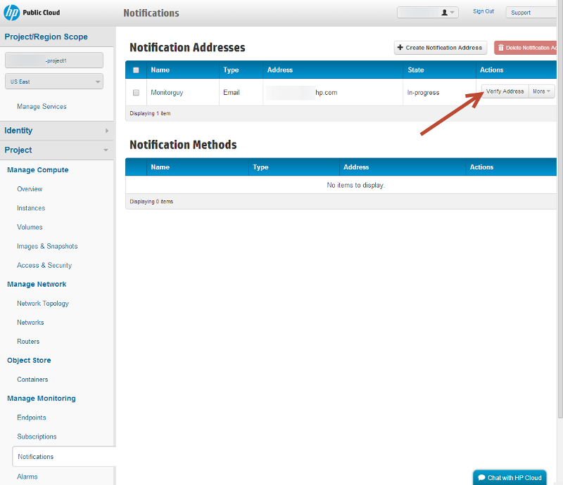
Enter the Verification Code you received at your specified notification address from the monitoring service in the "Verify Notification Address."
Click "Verify Address."
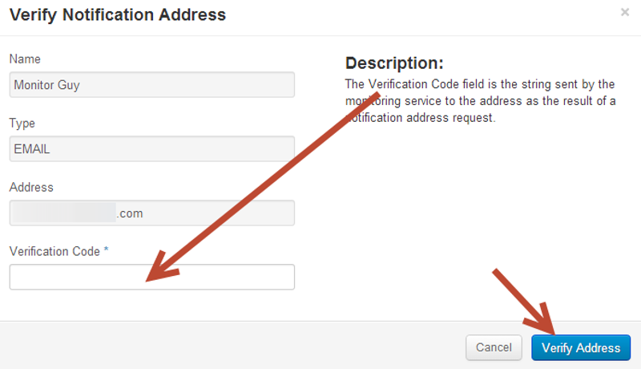
Click "Create Notification Method" under "Actions" on the "Notifications" page.
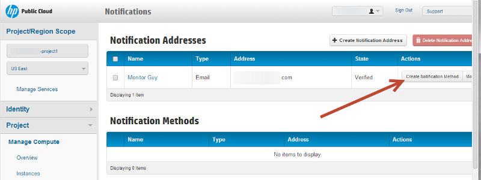
Enter a notification method name in the "Name" box, a type, and an email address, and click "Create Notification Method."
Create alarm name
Click "Alarms" under "Manage Monitoring" in the left-hand bar.
Click "+Create Alarm" in the upper-right hand of the "Alarms" page.
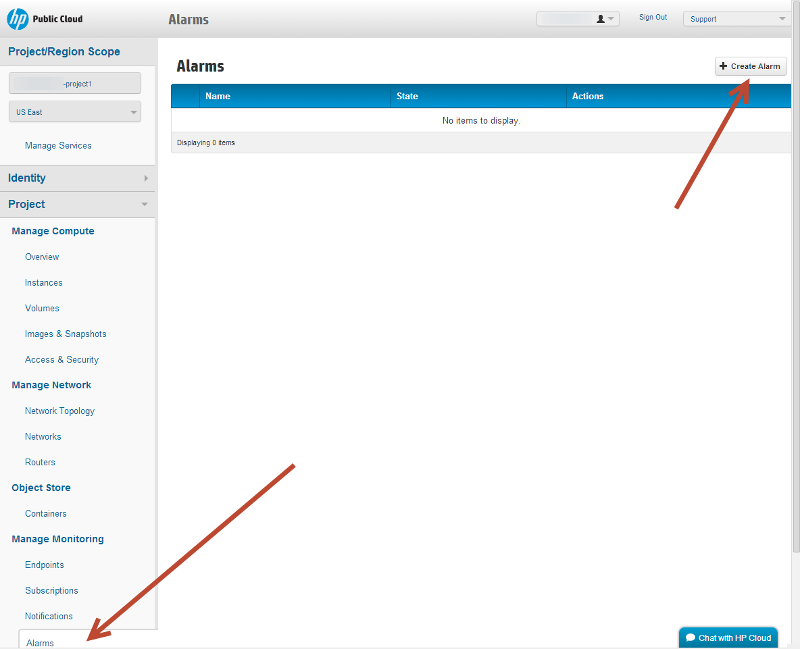
Enter alarm name in "Create Alarm" box.
Enter an alarm expression as indicated under "Description" in the "Create Alarm" box. Click to see the "Alarm Expressions" section for setup information or use the link in the interface. When the expression you set is true, it triggers a notification.
Select an alarm action name and click "Create Alarm."
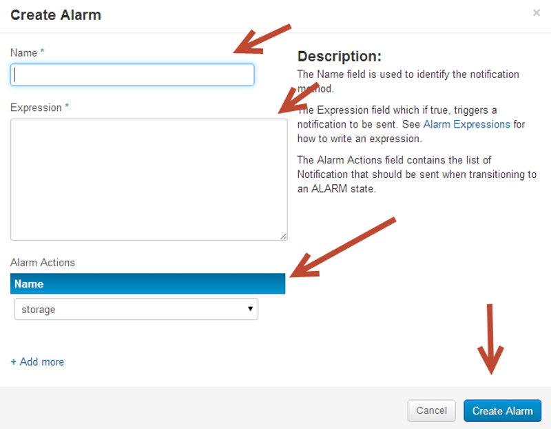
Organize and manage HP Helion Public Cloud access
Click "Identity" in the left-hand interface to display links:
Domain - The domain is your primary work space in HP Helion Public Cloud. An individual or company can be the domain owner and enables a project with the necessary services and permissions. The first user created in a domain is considered the domain owner and placed in both the "Users" and "Domain Administrators" groups.
A domain has one owner and may have multiple users, groups and roles. A domain owner can allow users of another domain access to its projects.
Projects - A project is a collection of HP Helion Public Cloud services, e.g., compute, storage, etc. within a domain A project is defined by selecting services to be activated and a set of users to interact with the services. A project may contain multiple services, such as compute or object storage. Services can exist multiple times within the same project as long as they have different service endpoints, distinguished by their geography and region.
Users - Users are defined individually and can be assigned to groups and granted roles either directly or through inclusion in groups. A user may have multiple roles.
Groups - When you create a domain, two default groups are created: Users and Domain Administrators. Domain Administrators can add individuals to a group and create new groups, which may contain multiple users.
Roles - A role is a user or group capability within a service that determines access rights. Roles include Compute Admin, Network Admin, Object Storage Admin, and others. Domain owners can assign roles to individuals or groups. A role may be associated with multiple users and multiple groups.
For further information
*For the latest updates to the current HP Helion Public Cloud Console release, see What's new with HP Helion Public Cloud Console.. * For basic information about our HP Helion Public Cloud compute services, take a look at the HP Helion Public Cloud compute overview page * If you'd rather use the HP Helion Public Cloud Command Line Interface (CLI) features, choose your topic of interest from our HP Helion Public Cloud CLI pages.